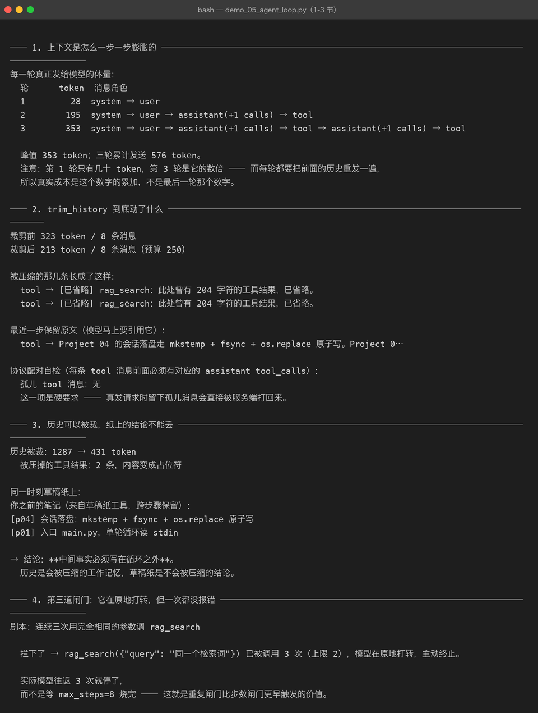
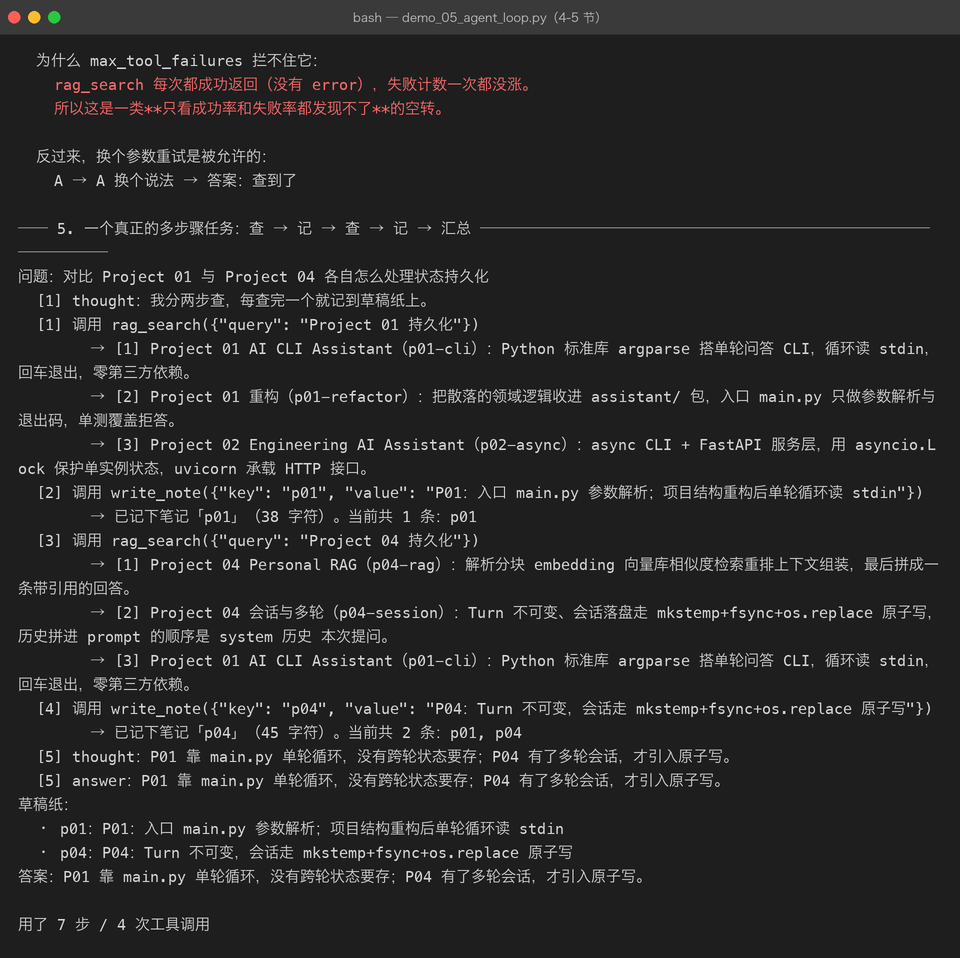
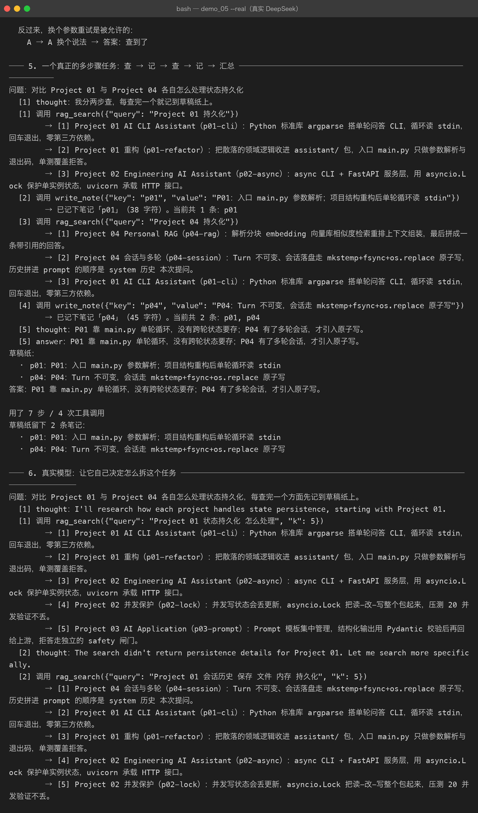

Milestone 05 — Agent Loop：循环之外的状态管理
Milestone 04 把 ReAct 循环写出来了：想一步、调一次工具、把结果塞回对话、再想一步。它跑得通单步任务，也跑得通「问一句答一句」的简单多轮。但真把它拿去做多步骤任务的时候，三个问题立刻浮出水面：
- 上下文在膨胀 —— 每一步的工具结果都堆进同一个 messages 列表，而每一轮都要把整段历史重发一遍
- 中间结论没地方放 —— 模型第 2 步查到的事实只活在 assistant 的 content 里，一旦为了省 token 把历史裁掉，结论跟着没了
- 多出的空转形态拦不住 —— 反复用同样的参数调同一个工具，每次都成功，失败闸门一次都没涨
这一章就是补这三件事：memory.py（工作记忆 + 草稿纸）、第三道闸门（max_repeats）、以及一个真的跑完的多步骤任务。
1. 先看清成本：每一轮都在重发历史
真实一次多步骤任务跑下来，每一轮发出去的体量是这样（用 estimate_messages_tokens 量的）：
轮 token 消息数 其中占位
1 244 2 0
2 530 4 0
3 829 6 0
4 848 9 2
5 882 11 4
6 951 13 5
7 847 8 2
累计发送 5131 token关键不是「峰值 951」而是「累计 5131」。多步骤任务的账单按累计算：第 N 轮要把前 N-1 轮的全部历史再付一遍钱。所以降成本的杠杆有两个：少走几步、把历史压薄。这一章管第二个。

2. trim_history：压缩历史，但不能破坏协议
裁剪规则（优先级从高到低）：
| 优先级 | 内容 | 理由 |
|---|---|---|
| 1 | system 永不裁剪 | 工作规则丢了，Agent 就退化成裸模型 |
| 2 | 第一条 user 问题永不裁剪 | 模型不知道自己在回答什么 |
| 3 | 最近 keep_recent_steps 轮保留原文 | 那几步是它马上要引用的内容 |
| 4 | 更早的工具结果替换成占位行 | 模型知道「有过但读不到」，不会以为没查过 |
| 5 | assistant(tool_calls) 与它的 tool 消息同进同出 | 协议要求的是配对，不是先后 |
第 5 条是最容易写错、而且只有真发请求才会暴露的一类 bug：只砍掉 assistant、留下它的 tool 消息，服务端直接打回来；本地 mock 一句怨言都没有。这和 Milestone 03 讲的顺序坑是同一个根因。
占位行长这样：
[已省略] rag_search：此处曾有 204 字符的工具结果，已省略。写明被省略了多少字符是刻意的 —— 模型看到「有过 204 字符」和看到「什么都没有」，后续的决策不一样。
裁剪真的会生效，看第 4 轮开始出现占位就知道：
裁剪前 323 token / 8 条消息
裁剪后 213 token / 8 条消息（预算 250）
被压缩：tool → [已省略] rag_search：此处曾有 204 字符的工具结果，已省略。
最近一步保留原文：tool → Project 04 的会话落盘走 mkstemp + fsync + os.replace 原子写。…
协议配对自检 → 孤儿 tool 消息：无另外两个实现细节值得记：
- trim 返回新列表，不原地改。
RecordingLLM.transcript存的是同一批对象的引用，原地改写会让「日志里看到的历史」和「实际发出去的历史」对不上，排查时看到的就不是真相 - token 估算只用来做决策，不用来做计费。中文是这条铁律最容易被忽略的地方：1 个汉字接近 1 个 token，按「字符数 // 4」的英文经验公式会严重低估
3. Scratchpad：历史会被裁，纸上的结论不会
这是整章的立论。做一次实验：
历史被裁：1287 → 431 token
被压掉的工具结果：2 条，内容变成占位符
同一时刻草稿纸上：
[p04] 会话落盘：mkstemp + fsync + os.replace 原子写
[p01] 入口 main.py，单轮循环读 stdin历史是会被压缩的工作记忆，草稿纸是不会被压缩的结论。
实现上它被做成两个工具（write_note / read_notes）而不是 prompt 里的一个字段 —— 记什么、什么时候读，由模型自己决定，控制权还在它手上。同时给 Scratchpad 的 render() 常驻在 system 提示里，省掉一轮 read_notes 的往返（多步骤任务里省一轮就是实打实省钱）。
这里踩了一个真坑：给 Scratchpad 加了 __len__ 之后，空草稿纸在布尔判断里是假值：
pad = Scratchpad() # 刚建好，一张空纸
assert bool(pad) is False # ← 因为 __len__ == 0于是 build_agent 里那句 if scratchpad: 把刚建好的空纸当成「没传」，草稿纸工具一个都没注册上。这个 bug 离线测试看不出来（测试都是直接传 Registry，从没走过空纸这条分支），是给 CLI 加 --notes 入口时才暴露的。修法是调用点一律写 is not None，并用 test_empty_pad_is_falsy 把这条约定钉住。
同一张纸必须被两个工具共享，所以纸在 cli.py / build_agent 里建一次再往下分发 —— 让两个工具各 new 一张，就变成两张互不相通的纸。
4. 第三道闸门：它没报错，只是在原地打转
Milestone 04 有两道闸门：max_steps（成本）和 max_tool_failures（连续失败）。多步骤任务补上第三种失效形态：
剧本：连续三次用完全相同的参数调 rag_search
拦下了 → rag_search({"query": "同一个检索词"}) 已被调用 3 次（上限 2），
模型在原地打转，主动终止。
实际模型往返 3 次就停了，而不是等 max_steps=8 烧完。为什么 max_tool_failures 拦不住它：rag_search 每次都成功返回，没有 error，失败计数一次都没涨。这是一类只看成功率/失败率都为正常的空转，必须靠签名计数识别。
两个实现细节：
- 签名用
json.dumps(arguments, sort_keys=True)。模型可能把{"a":1,"b":2}写成{"b":2,"a":1}，那是同一次调用 —— 不做排序，换个键顺序就能绕过闸门 - 它在
max_steps之前触发才有意义，否则只是多烧几次钱的装饰品（有测试专门钉这一条）

三道闸门对照：
| 闸门 | 拦什么 | 触发信号 |
|---|---|---|
max_steps=8 | 兜底的成本天花板 | 轮数用尽 |
max_tool_failures=3 | 报错型空转 | 连续 ToolResult.error（成功一次清零） |
max_repeats=2 | 成功型空转 | 同一「工具名 + 参数」被调用太多次 |
5. 一个真的跑完的多步骤任务
离线剧本（确定性，截图对得上）：查 P01 → 记笔记 → 查 P04 → 记笔记 → 汇总。
问题：对比 Project 01 与 Project 04 各自怎么处理状态持久化
[1] thought：我分两步查，每查完一个就记到草稿纸上。
[1] 调用 rag_search({"query": "Project 01 持久化"})
→ [1] Project 01 AI CLI Assistant（p01-cli）…
→ [2] Project 01 重构（p01-refactor）…
[2] 调用 write_note({"key": "p01", ...})
→ 已记下笔记「p01」（38 字符）。当前共 1 条：p01
[3] 调用 rag_search({"query": "Project 04 持久化"})
[4] 调用 write_note({"key": "p04", ...})
→ 已记下笔记「p04」（45 字符）。当前共 2 条：p01, p04
[5] answer：P01 靠 main.py 单轮循环，没有跨轮状态要存；P04 有了多轮会话，才引入原子写。
用了 7 步 / 4 次工具调用 / 草稿纸 2 条真实 DeepSeek 跑同一个问题时，模型的行为更值得看：

- 它自己决定分两次检索（第 1 轮查 P01，第 2 轮一轮里并行发两个
rag_search） - 第 4 轮才写笔记，而且写在比较之后 —— 「先记下来」和「先比对再挑重点记」是两种策略，模型选了后者
- 最后一步直接给答案，没有再调
read_notes（笔记常驻在 system 里，省掉了这一轮） - 12 步 / 7 次工具调用 / 草稿纸 2 条，答案里同时用上了两条笔记的内容
这就是 Plan → Act → Observe 的完整闭环： Observe 的结果落在草稿纸上，而不是留在随时会被裁的对话流里。
6. 这一章踩到的坑与结论
| # | 坑 | 怎么发现的 | 修法 |
|---|---|---|---|
| 1 | 空 Scratchpad 在布尔判断里是假值（__len__ 导致） | 跑 build_agent(scratchpad=True) 发现工具没注册 | 调用点一律 is not None + 钉测试 |
| 2 | build_agent() 的默认分支 FakeLLM 没 import | 第一次真的调用 build_agent() | 补导入 + 加测试覆盖默认值分支 |
| 3 | 剧本里给了 content 却没给 tool_calls | demo 第 1 步就被当成最终答案结束了 | 思考与调用要写在同一条 assistant 消息里 |
| 4 | 加了重复闸门后，老的 max_steps 测试语义变了 | test_max_steps_exceeded 开始抛 RepeatedToolCall | 测试里每步参数改成不一样 —— 新闸门不是 bug，是它拦住了原本要靠烧满步数才停的空转 |
结论：
- 多步骤任务的成本 = 每轮重发历史的累加，不是最后一轮那个数字。
- 裁剪必须整轮配对地裁，留下孤儿 tool 消息会被服务端打回。
- 中间结论必须写在循环之外（草稿纸），写在历史里迟早被裁掉。
- 空转分两种：报错的（失败闸门管）和成功但原地打转的（重复闸门管）。
- 改结构要数调用点 —— 这一章新加的东西，每个入口（CLI / build_agent / 测试）都要跑到。
7. 代码位置
| 文件 | 职责 |
|---|---|
src/agent/memory.py | estimate_tokens / estimate_messages_tokens / trim_history / Scratchpad |
src/agent/tools.py | WriteNoteTool / ReadNotesTool / default_tools(pad) |
src/agent/agent.py | 循环里的三处新增：重复计数、工作记忆裁剪、system 注入笔记 |
src/agent/errors.py | RepeatedToolCall |
src/agent/settings.py | max_repeats / context_budget / keep_recent_steps |
src/agent/cli.py | --notes 开关（挂载草稿纸工具并在末尾打印笔记） |
tests/test_memory.py | 23 项：估算 / 裁剪 / 孤儿消息 / 草稿纸 |
tests/test_agent_loop.py | 19 项：重复闸门 / 循环内裁剪 / 多步骤组合 |
demos/demo_05_agent_loop.py | 6 节真实演示，支持 --real |
cd projects/05-agent-mcp
.venv/bin/python demos/demo_05_agent_loop.py
DEEPSEEK_API_KEY=xxx .venv/bin/python demos/demo_05_agent_loop.py --real
.venv/bin/python -m agent.cli --notes --real "对比 Project 01 与 Project 04 的持久化方式"8. 下一步
Milestone 06 做任务分解：这一章的拆解是模型在 thought 里自己想出来的，下一步要把它变成结构化的东西 —— 一个显式的 Plan（子任务 + 依赖 + 完成状态），让多个 Agent 能各自领走一部分，也就是 Multi-Step Task 到 Agent Workflow 的那一步。
9. 版本
v0.5 → v0.6，工作记忆 + 草稿纸 + 第三道闸门落地，离线真实双路跑通，python -m agent.cli --notes 可用，测试 103 → 146 passed，截图 12 → 15 张。